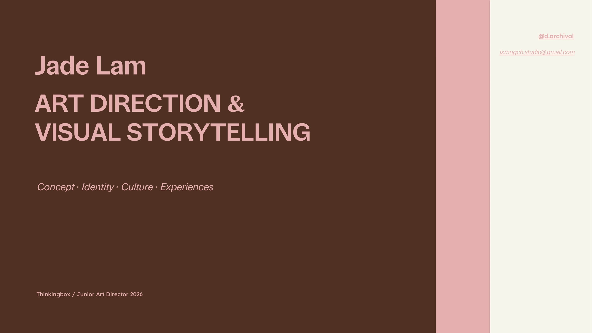
Jade Lam
ART DIRECTION &
VISUAL STORYTELLING
Concept · Identity · Culture · Experiences
Thinkingbox / Junior Art Director 2026
@d.archivol
lxmngch.studio@gmail.com

ABOUT MY PRACTICE
Curious by Nature,
Creative by Design :D
I'm a London-based multidisciplinary creative designer, curious about how culture, human
behaviour and storytelling can inspire unexpected ideas. I enjoy questioning familiar things
and finding new ways to make people see, feel or interact with them differently.
My practice spans art direction, visual identity, digital storytelling and participatory
experiences. From developing fictional worlds to bringing cultural dining experiences to
life, I love exploring how an idea can grow into something people can actually experience.
I’m passionate about imagining and making. Through visual experimentation, design
development and creative collaboration, I explore new ways of bringing ideas to life, with
a particular curiosity about motion, AI-assisted workflows and emerging creative
technologies.
Ideas worth exploring. Visual worlds worth making.
JADE LAM / ART DIRECTION 2026
02
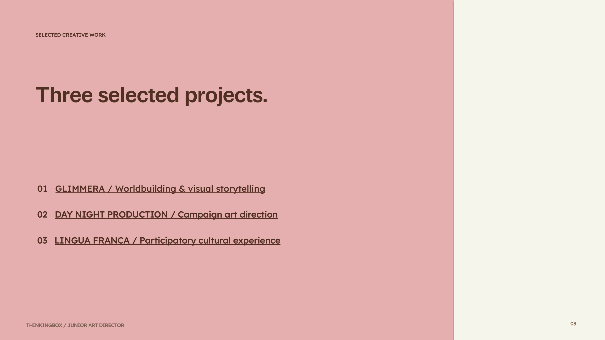
SELECTED CREATIVE WORK
Three selected projects.
THINKINGBOX / JUNIOR ART DIRECTOR
03
01 GLIMMERA / Worldbuilding & visual storytelling
02 DAY NIGHT PRODUCTION / Campaign art direction
03 LINGUA FRANCA / Participatory cultural experience

PROJECT 01 / DISNEY IMAGINATIONS 2025 · FINALIST
GLIMMERA / WORLD & STORY
04
GLIMMERA
What would you send to an alien to show them
the world we know?
IMMERSIVE EXPERIENCE / WORLDBUILDING / ART DIRECTION / VISUAL IDENTITY
THE WORLD
Our team imagined a planet shaped by a single flower. A Golden Disc
from Earth introduces its inhabitants to new cultures, challenging
them to discover possibilities beyond their familiar world.
THE IDEA
Cultural exchange became the central narrative. We translated it into
a guest journey, attractions and a visual language, making a fictional
world tangible through connected experiences.
Team project · My role: team lead, worldbuilding, visual identity, pitch deck

A story in every detail.
A central narrative becomes a visual world, from identity to guest experience.
GLIMMERA / IDENTITY & EXPERIENCE
05
Guests arrive as cultural visitors, discovering
Glimmera through its inhabitants, museum,
attraction and spectacular finale. The journey
gives the story a physical and emotional
rhythm.
Inspired by the bird-of-paradise flower, the logo
uses a motif that reappears throughout the
world, connecting narrative, visual identity and
guest-facing design.
＋
JOURNEY / ATTRACTION MAP
＋
LOGO / IDENTITY DETAILS
DESIGN GOAL
Make the story recognisable through a visual motif that connects
the fictional world and its identity.
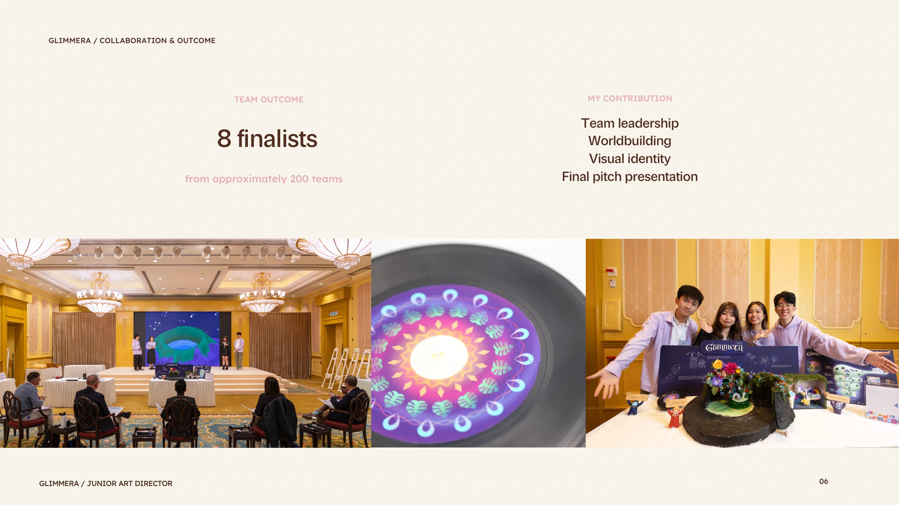
GLIMMERA / COLLABORATION & OUTCOME
GLIMMERA / JUNIOR ART DIRECTOR
06
TEAM OUTCOME
8 finalists
from approximately 200 teams
MY CONTRIBUTION
Team leadership
Worldbuilding
Visual identity
Final pitch presentation
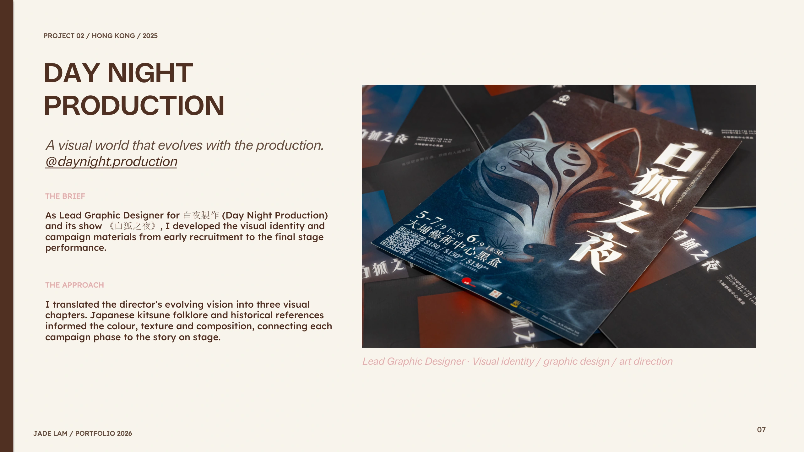
PROJECT 02 / HONG KONG / 2025
DAY NIGHT
PRODUCTION
A visual world that evolves with the production.
@daynight.production
THE BRIEF
As Lead Graphic Designer for 白夜製作 (Day Night Production)
and its show 《白狐之夜》, I developed the visual identity and
campaign materials from early recruitment to the final stage
performance.
THE APPROACH
I translated the director’s evolving vision into three visual
chapters. Japanese kitsune folklore and historical references
informed the colour, texture and composition, connecting each
campaign phase to the story on stage.
Lead Graphic Designer · Visual identity / graphic design / art direction
JADE LAM / PORTFOLIO 2026
07

One production, three visual chapters.
The identity evolved alongside the story, from the first announcement to the final performance.
01
白夜製作
Pre-production
A restrained, flexible identity for establishing the
production company and recruiting its creative
team.
02
《白狐之夜》讀劇
Play Reading
A new key visual introducing the play's atmosphere
through colour, texture and graphic composition.
03
《白狐之夜》舞台劇
Final Theatre Performance
An evolved campaign identity that built on the
play-reading visuals while giving the final
production a more distinctive presence.
DAY NIGHT PRODUCTION / IDENTITY SYSTEM
08

DAY NIGHT PRODUCTION / IDENTITY SYSTEM – PHASE 02
09
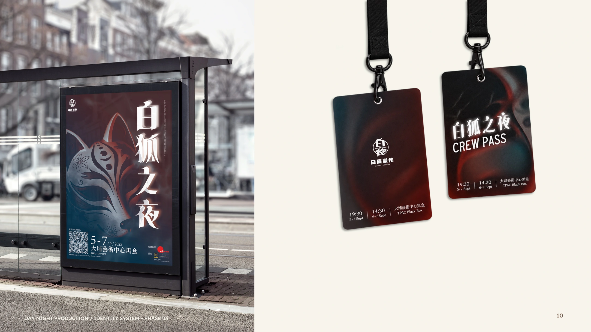
DAY NIGHT PRODUCTION / IDENTITY SYSTEM – PHASE 03
10
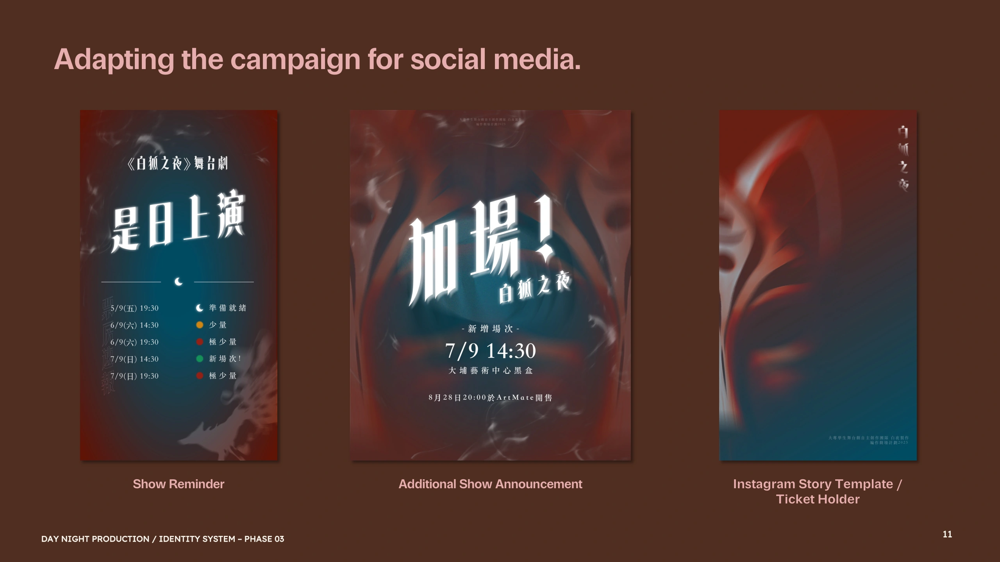
Adapting the campaign for social media.
DAY NIGHT PRODUCTION / IDENTITY SYSTEM – PHASE 03
11
Show Reminder
Additional Show Announcement
Instagram Story Template /
Ticket Holder
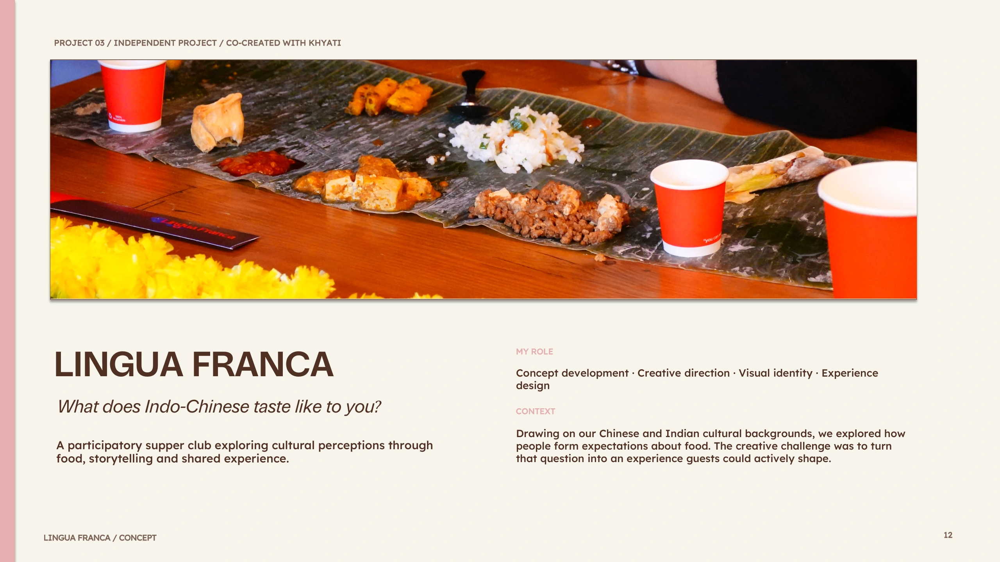
PROJECT 03 / INDEPENDENT PROJECT / CO-CREATED WITH KHYATI
LINGUA FRANCA
What does Indo-Chinese taste like to you?
A participatory supper club exploring cultural perceptions through
food, storytelling and shared experience.
MY ROLE
Concept development · Creative direction · Visual identity · Experience
design
CONTEXT
Drawing on our Chinese and Indian cultural backgrounds, we explored how
people form expectations about food. The creative challenge was to turn
that question into an experience guests could actively shape.
LINGUA FRANCA / CONCEPT
12

Food as a shared language.
We turned cultural curiosity into a participatory world rather than a fixed
definition of fusion.
THE CONTEXT
A lingua franca is a shared language between people with different
native languages. Khyati and I used this idea to explore how people
form expectations about food.
We invited eight guests into a playful challenge, encouraging them to
question familiar associations and discover their own interpretations of
Indo-Chinese cuisine.
THE IDEA
We drew on Indian and Chinese celebratory references to create a
visual world across invitations, identity, table styling and menu
design.
The narrative continued through guest activities, turning participants
into co-authors of the experience.
LINGUA FRANCA / DESIGN BRIEF
13
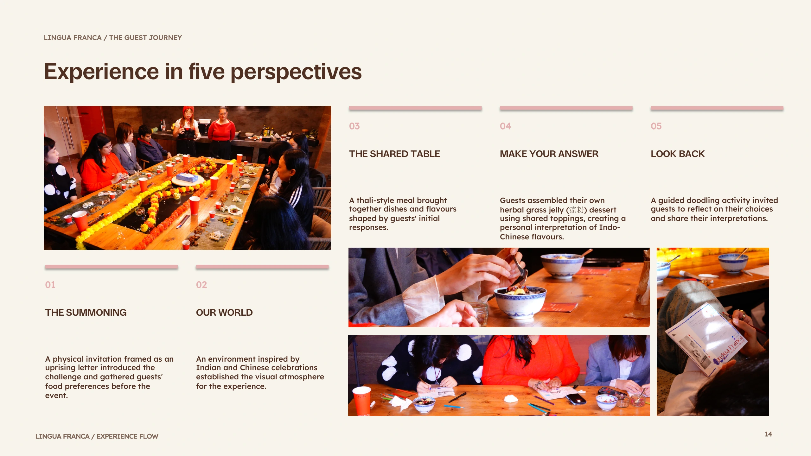
LINGUA FRANCA / THE GUEST JOURNEY
Experience in five perspectives
01
THE SUMMONING
A physical invitation framed as an
uprising letter introduced the
challenge and gathered guests'
food preferences before the
event.
02
OUR WORLD
An environment inspired by
Indian and Chinese celebrations
established the visual atmosphere
for the experience.
03
THE SHARED TABLE
A thali-style meal brought
together dishes and flavours
shaped by guests' initial
responses.
04
MAKE YOUR ANSWER
Guests assembled their own
herbal grass jelly (涼粉) dessert
using shared toppings, creating a
personal interpretation of Indo-
Chinese flavours.
05
LOOK BACK
A guided doodling activity invited
guests to reflect on their choices
and share their interpretations.
LINGUA FRANCA / EXPERIENCE FLOW
14
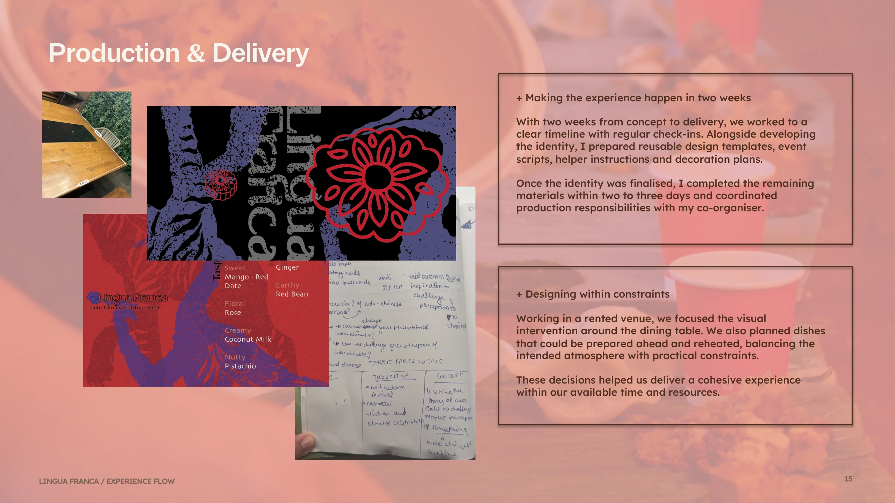
+ Making the experience happen in two weeks
With two weeks from concept to delivery, we worked to a
clear timeline with regular check-ins. Alongside developing
the identity, I prepared reusable design templates, event
scripts, helper instructions and decoration plans.
Once the identity was finalised, I completed the remaining
materials within two to three days and coordinated
production responsibilities with my co-organiser.
+ Designing within constraints
Working in a rented venue, we focused the visual
intervention around the dining table. We also planned dishes
that could be prepared ahead and reheated, balancing the
intended atmosphere with practical constraints.
These decisions helped us deliver a cohesive experience
within our available time and resources.
15
Production & Delivery
LINGUA FRANCA / EXPERIENCE FLOW
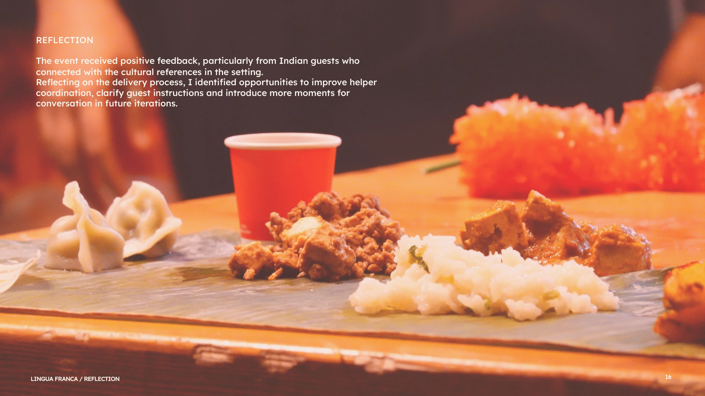
REFLECTION
The event received positive feedback, particularly from Indian guests who
connected with the cultural references in the setting.
Reflecting on the delivery process, I identified opportunities to improve helper
coordination, clarify guest instructions and introduce more moments for
conversation in future iterations.
16
LINGUA FRANCA / REFLECTION

Motion & Visual Experimentation
17
Selected motion graphics produced with Adobe After Effects from Gutter, a speculative food and beverage brand experience,
exploring how animated visual elements can extend a brand's personality into digital storytelling.
Animated brand element: typing indicator
Clips from the brand’s promotional video
GUTTER / MOTION GRAPHICS
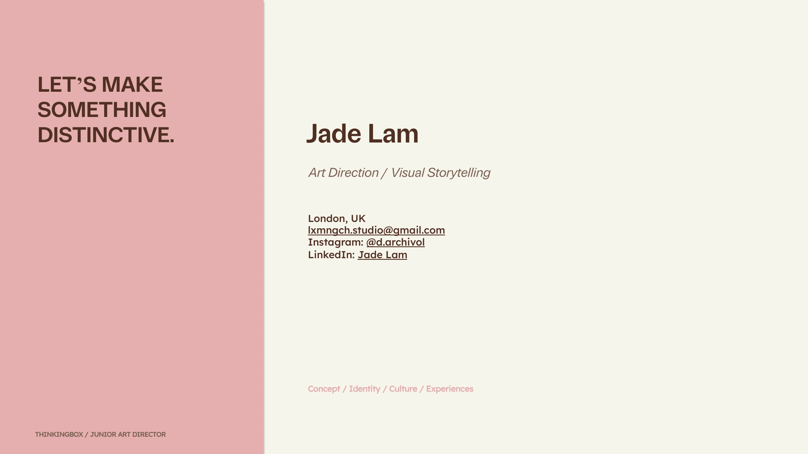
LET’S MAKE
SOMETHING
DISTINCTIVE.
Jade Lam
Art Direction / Visual Storytelling
London, UK
lxmngch.studio@gmail.com
Instagram: @d.archivol
LinkedIn: Jade Lam
Concept / Identity / Culture / Experiences
THINKINGBOX / JUNIOR ART DIRECTOR